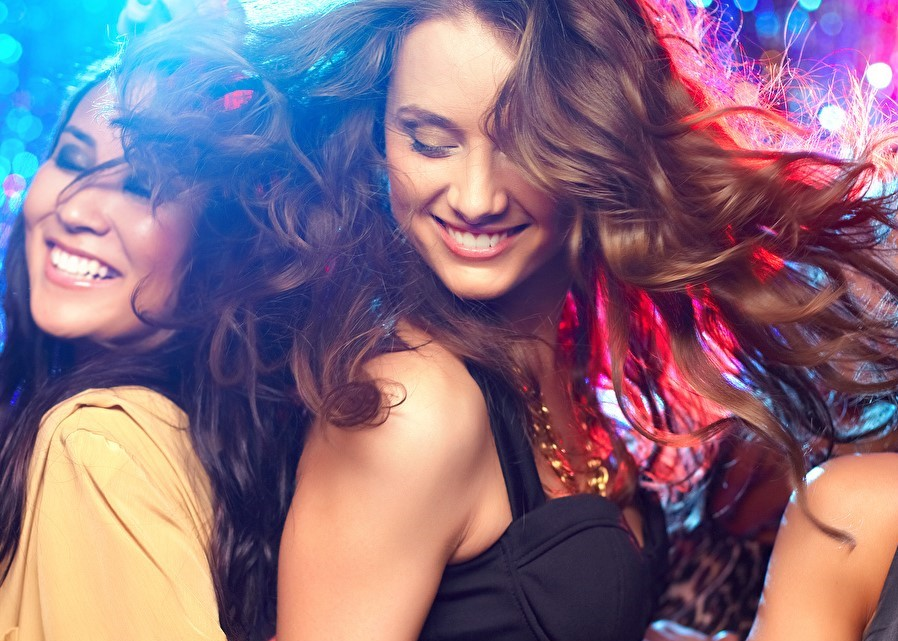
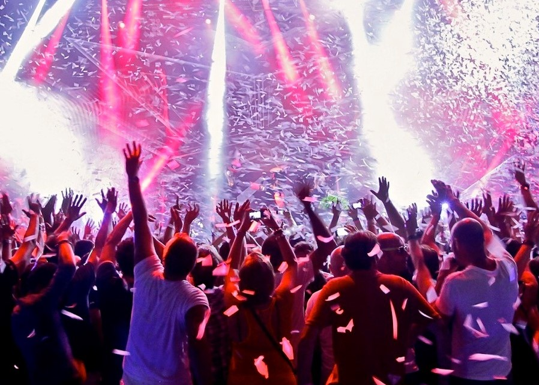
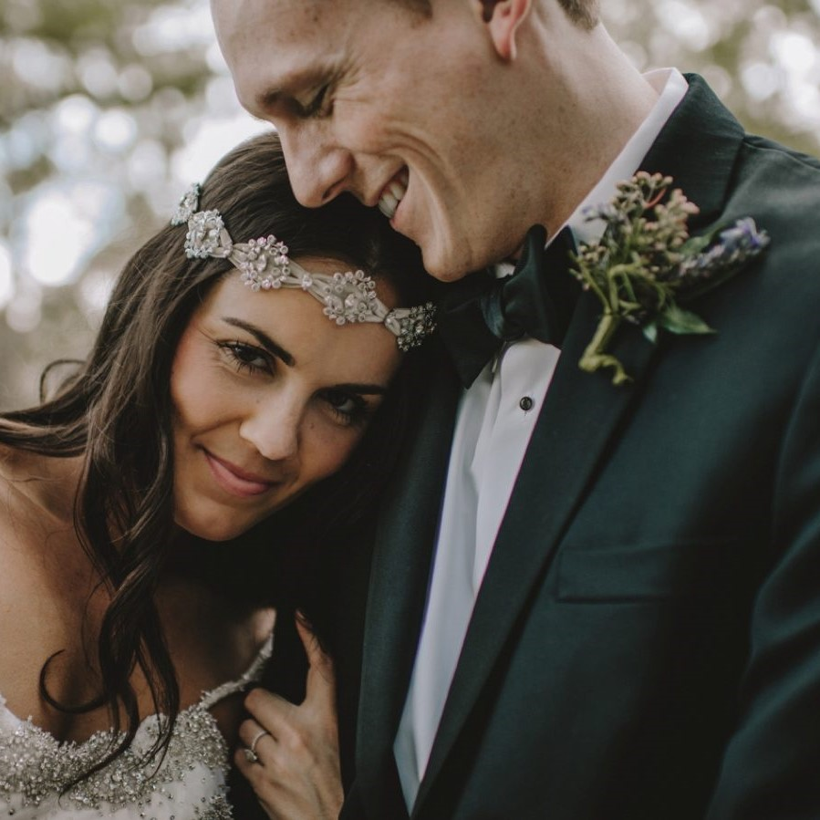

We specialize in product launches, grand openings, trade shows, award ceremonies, red carpets, conventions, celebrity appearances, charity events, fashion shows, festivals, private parties and more! Whether 10 or 10,000 people, or anywhere in between, VEVRA can assist your event. We have worked regularly and are preferred photographers by the clients for repetitive business.
We specialize in product launches, grand openings, trade shows, award ceremonies, red carpets, conventions, celebrity appearances, charity events, fashion shows, festivals, private parties and more! Whether 10 or 10,000 people, or anywhere in between, VEVRA can assist your event. We have worked regularly and are preferred photographers by the clients for repetitive business.

Our style of work is edgy and sharp with vivid colors as acknowledged by several satisfied clients. It is our intention to always keep to your budget and deliver stunning and creative images within the time frame required. We do not only get involved in producing impressive campaign shoots for our clients, but also do all retouching and post production in-house saving you valuable time and money. Before each project, we consult with you to fully understand your goal for the project, company, or brand. We will help you strategize the execution of your creative vision based on your goal.
Our style of work is edgy and sharp with vivid colors as acknowledged by several satisfied clients. It is our intention to always keep to your budget and deliver stunning and creative images within the time frame required. We do not only get involved in producing impressive campaign shoots for our clients, but also do all retouching and post production in-house saving you valuable time and money. Before each project, we consult with you to fully understand your goal for the project, company, or brand. We will help you strategize the execution of your creative vision based on your goal.

Offering the classical beauty of traditional film techniques alongside the brilliance of modern digital technologies, we make the magic of your “once in a lifetime” event everlasting. Our aesthetic and candid approach seeks to embrace each heartfelt smile, every enchanting glance, and the unique human connection that spark, between you and your loved ones, guaranteeing you stunning bridal wedding photos and high definition videos that are brought to life. With the utmost of quality and care taken in image-making, we work hand in hand with our clientele in creating cherished memories that will last forever.
Offering the classical beauty of traditional film techniques alongside the brilliance of modern digital technologies, we make the magic of your “once in a lifetime” event everlasting. Our aesthetic and candid approach seeks to embrace each heartfelt smile, every enchanting glance, and the unique human connection that spark, between you and your loved ones, guaranteeing you stunning bridal wedding photos and high definition videos that are brought to life. With the utmost of quality and care taken in image-making, we work hand in hand with our clientele in creating cherished memories that will last forever.

It brings us no greater joy than to create powerful product photos that work wonders in your marketing. We’re also up for any challenge, and any excuse to dig deep into our technical knowledge to create the right look, the right lighting, the right images of your products. We thrive on the variety and it keeps us fresh. We are confident that we have the technical knowledge, ability and enthusiasm to tackle any situation.